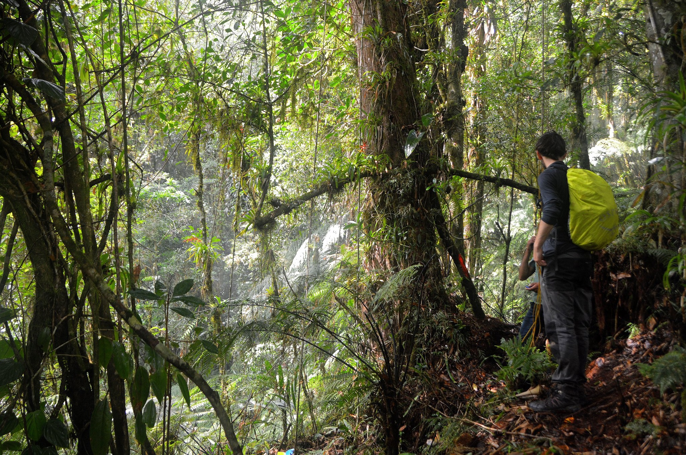

Matt Hamer
Research Assistant Insect Biodiversity
and Biogeography Laboratory, HKU
About Me
Email - matt.hamer AT hotmail.co.uk
Twitter
ResearchGate
Flickr
Instagram
I am a junior entomological researcher, with a particular interest in myrmecology
alongside insect diversity, faunistics as well as taxonomy and evolution. Currently based at the
University of Hong Kong as a research assistant within the Insect Biodiversity and Biogeography Laboratory
investigating the ants of Hong Kong as well as other projects in the lab.
Work and Education
Education
- Taxonomy, Biodiversity & Evolution MSc. Imperial College London & Natural History Museum London
Disseration Supervisors: Dr Thomas Creedy & Prof Alfried Vogler
- Zoology BSc. Bangor Univeristy.
Hons Disseration Supervisor: Dr Alison Cameron
Work
- Research Assisstant: The University of Hong Kong, IBBL. Exotic insect species project. April 2021 – April 2022.
- Expedition Entomologist: Operation Wallacea LTD Cusuco National Park, Honduras. June 2019 – August 2019
- Entomology Curation: Bangor Univeristy (part time). 2018 September - June 2019
- Intern: Madagascan Biodiversity Center. August 2018 – September 2018
Current Projects
If you are interested in collaborating with any of the projects below please get in touch.
Publications
Indexed publications
- Silva, TSR., Hamer MT., Guénard, B. A checklist of Nylanderia (Hymenoptera: Formicidae: Formicinae) from Hong Kong and Macao SARs, with an illustrated identification key for species in Southeast China and Taiwan. (2023). Zootaxa. 5301(5):501-539.DOI: 10.11646/ZOOTAXA.5301.5.1
- Hamer MT., Pierce, MP., Guénard, B. The Amblyoponinae of Hong Kong. (2023). Asian Myrmecology. 16(e016005):1-37. DOI:10.1111/jbi.14546
- Wang R., Kass JM., Galkowski C., Garcia F., Hamer MT., Radchenko A., Salata S.,Schifani E,
Yusupov ZM., Economo EP., Guénard, B. New distribution data and phylogenetic approach reveal
bioregionalization of the western Palearctic ants (2023). Journal of Biogeography. 50: 503-514. DOI: 10.1111/jbi.14546
- Finch EA., Rajoelison ET., Hamer MT., Caruso T., Farnsworth KD., Fisher BL., Cameron A. The
effect of
swidden agriculture on ant communities in Madagascar (2022). Biological Conservation. 265. doi.org/10.1016/j.biocon.2021.109400
- Hamer MT., Marquis A., Guénard B. Strumigenys perplexa
(Smith 1876) (Formicidiae:
Myrmicinae) a
new
exotic ant to Europe with establishment in Guernsey, Channel Islands (2021). Journal of Hymenoptera
Research. 83: 101-124. doi:10.3897/jhr.83.66829
Non-indexed publications
- Hamer MT., Attewell P. Ponera testacea, Emery 1895, (Hym.: Formicidae) in a suburban
garden in coastal East Sussex (VC14), with a description of nest location.
(2022). British Journal of Entomology & Natural History. 36:1-7
- Hamer MT. A new site for Claviger testaceous (Preyssler) (Staphylinidae; Pselaphinae) in
East
Sussex (VC 14) with a review of modern and historical records.
(2021). The Coleopterist. 30(3): 129-130
- Hamer MT. A newly recorded exotic ant Pheidole punctatissima Mayr (Hymenoptera:
Formicidae) to
Britain
(2021). British Journal of Entomology & Natural History (Short Communication). 34(3):221-223. Link
- Hamer MT. New Records of Stenamma debile (Formicidae; Myrmicinae) in East Sussex
(Vice-County
14).
(2021) Bees, Wasps and Ants Recording Society Spring Newsletter
- Hamer MT., Cocks L. Linepithema iniquum (Mayr) (Hymenoptera: Formicidae) Found at the
National
Botanic
Garden of Wales. (2020). British Journal of Entomology & Natural History. 33:71-75. Link
- Hamer MT. First Record of Myrmica lobicornis from Anglesey, Wales (Vice-County 52). (2020)
Bees,
Wasps
and Ants Recording Society Spring Newsletter.
Photography
Alongside research, I am an avid macro photographer with a particular interest capturing biodiversity through
my lens - both my research and photography are therefore often intertwined. I publish all my photographs
formally onto
flickr.
I do charge for the use of my photographs depending on their use - please get in touch via my email
address above.
Where my photographs have been used
Photography Awards
Talks
I am more than happy to speak about entomology related topics, including insect natural history, specimen
prepartion and identification techneques. I would like to run some British ant identification courses in the
future too.
- From Field to Pin - A guide to preparing ant specimens for point mounting.
Bees, Wasps and Ants Recording Society AGM 2021
- The Peculiar Natural History of the Iniquiline Ant Tetramorium atratulum.
British Entomology and Natural History Society 'Entomological Opportunities 2018'